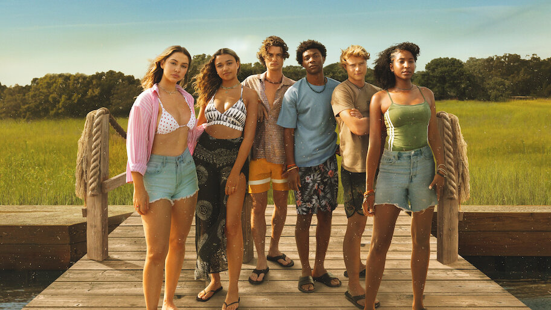

SINOPSIS
En las costas de Carolina del Norte, un grupo de adolescentes conocidos como los Pogues se embarca en una peligrosa aventura para descubrir un legendario tesoro...

ELENCO


PRODUCCIÓN
Creada por Josh y Jonas Pate, Outer Banks se filmó en las playas y costas de Carolina del Norte...
CURIOSIDADES
¡El tesoro que buscan los Pogues está inspirado en leyendas reales de piratas!
Muchas escenas se filmaron en playas y bosques reales de Carolina del Norte.